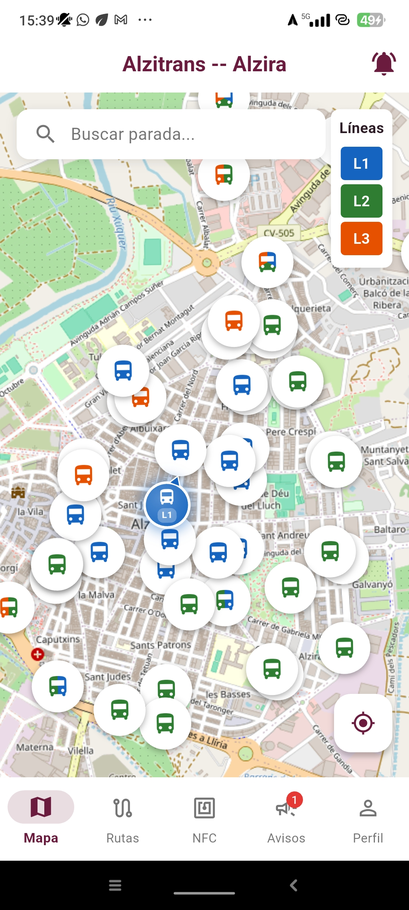
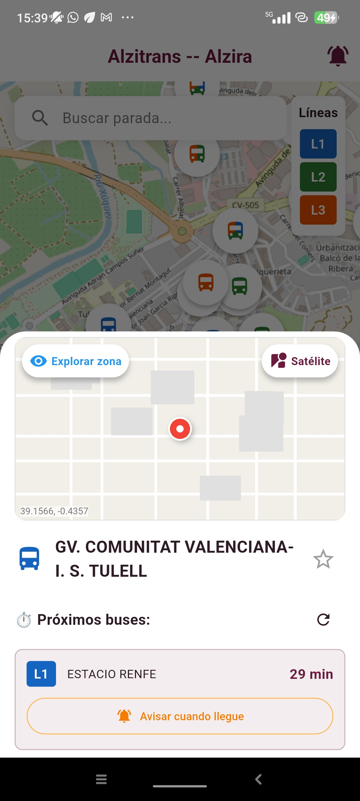
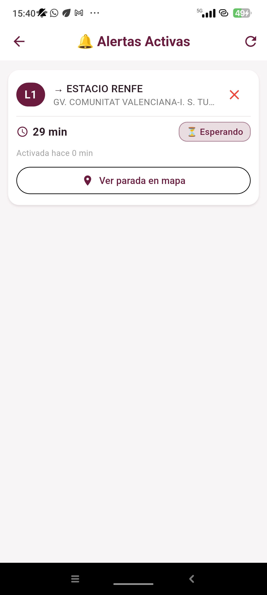
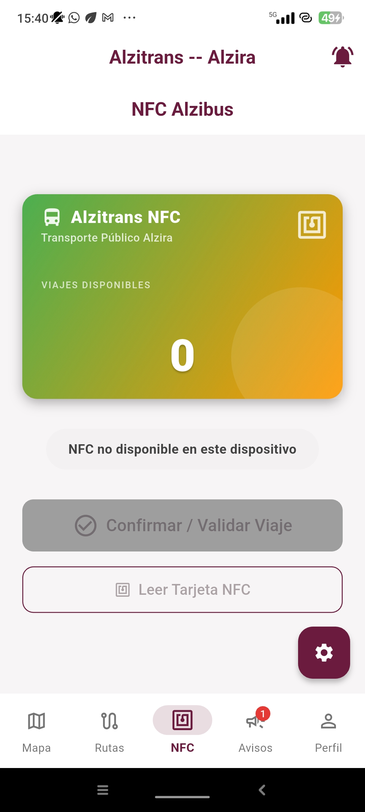
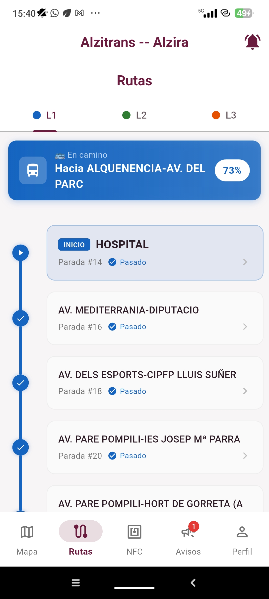
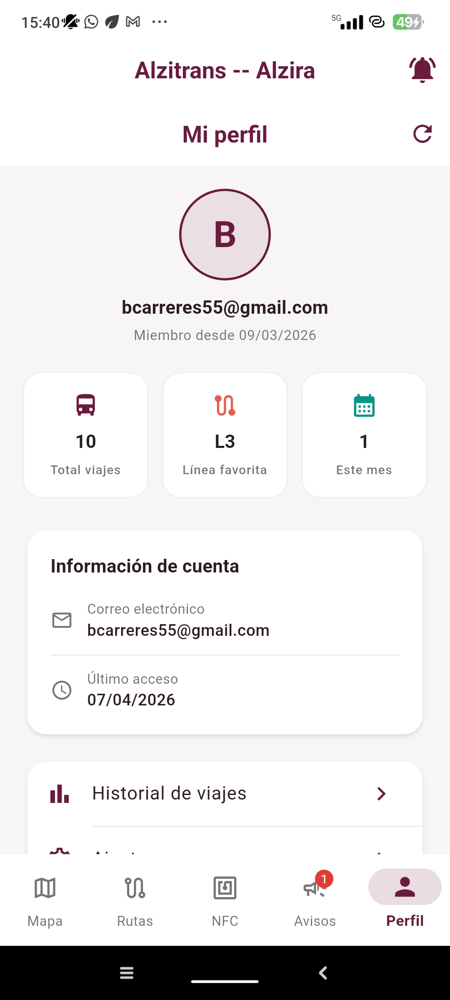
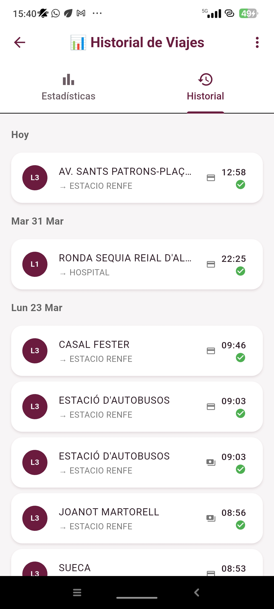
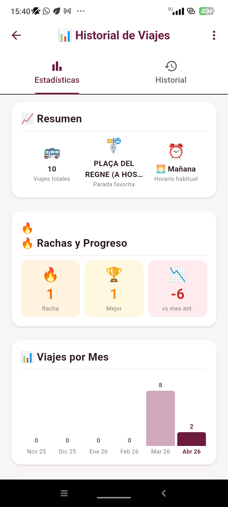
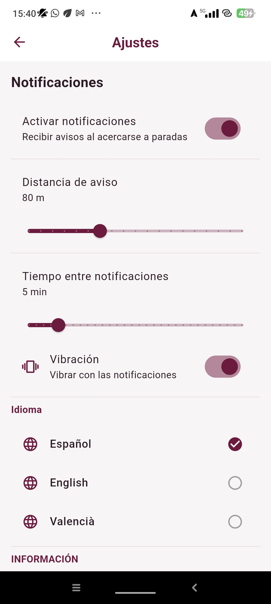

App gratuita para Alzira
Consulta tiempos reales de llegada, recibe alertas inteligentes, lee tu tarjeta NFC y mucho más. Todo lo que necesitas para moverte por Alzira.

Alzibus integra todas las herramientas del transporte público en una sola app, con un diseño moderno y fácil de usar.
Visualiza el mapa de Alzira con todas las paradas y líneas de autobús. Toca cualquier parada para ver los tiempos exactos de llegada actualizados segundo a segundo.

Activa una alerta para cualquier línea y parada. Alzibus te enviará una notificación cuando el bus esté a 5, 2 o 1 minuto de llegar. Nunca más correrás para coger el bus.

Acerca tu tarjeta de transporte al móvil y lee al instante tu saldo y los últimos viajes realizados. Compatible con tarjetas MIFARE Classic 1K del servicio de bus de Alzira.

Consulta el recorrido completo de las líneas L1, L2 y L3 con todas sus paradas, horarios y destinos. Planifica tu viaje antes de salir de casa.

Guarda tus paradas más frecuentes con un solo toque. Accede a los tiempos de llegada de tu parada habitual sin tener que buscarla cada vez que abres la app.

Alzibus guarda automáticamente cada viaje que realizas. Consulta cuándo y dónde cogiste el bus, qué línea usaste y cuántos viajes llevas este mes.

Un espacio exclusivo donde ver tus datos: total de viajes, paradas visitadas, línea favorita y mucho más. Un diseño limpio y funcional que te cuenta tu historia con el bus.

Alzibus está disponible en Español, Valenciano/Catalán e Inglés. Cambia el idioma desde los ajustes de la app y toda la interfaz se adapta inmediatamente.

Descarga Alzibus gratis y empieza a moverte mejor por Alzira hoy mismo.
Descargar en Google Play